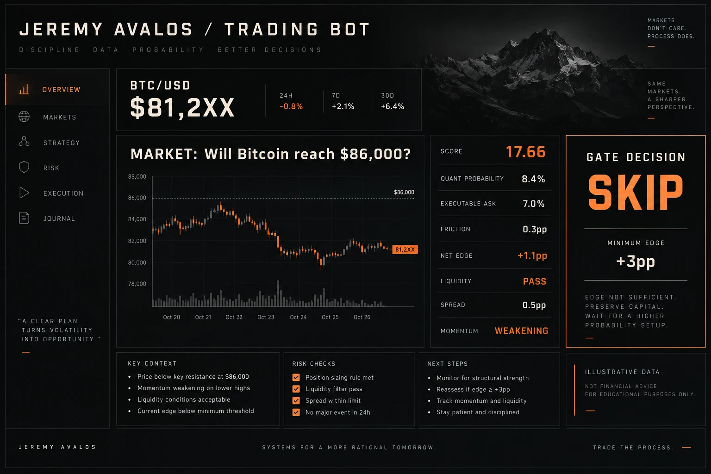
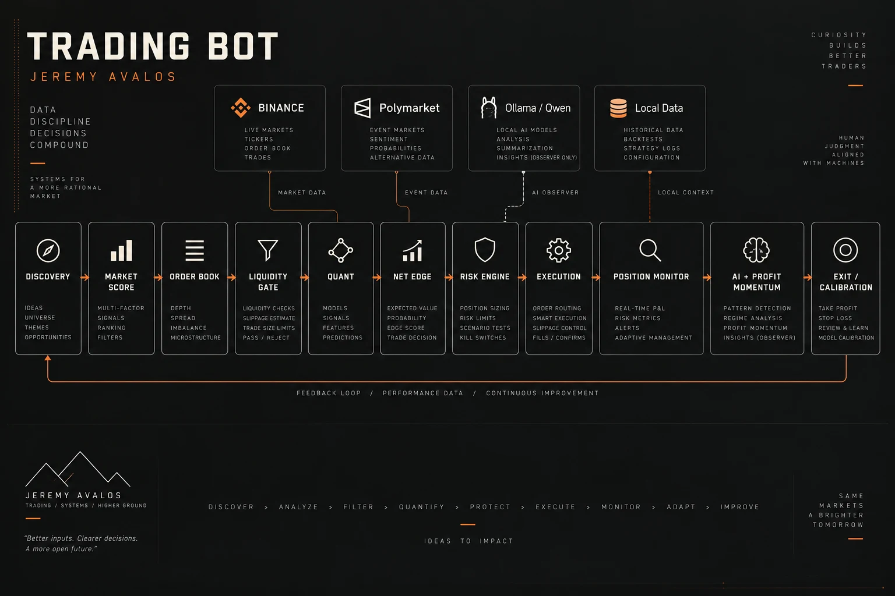
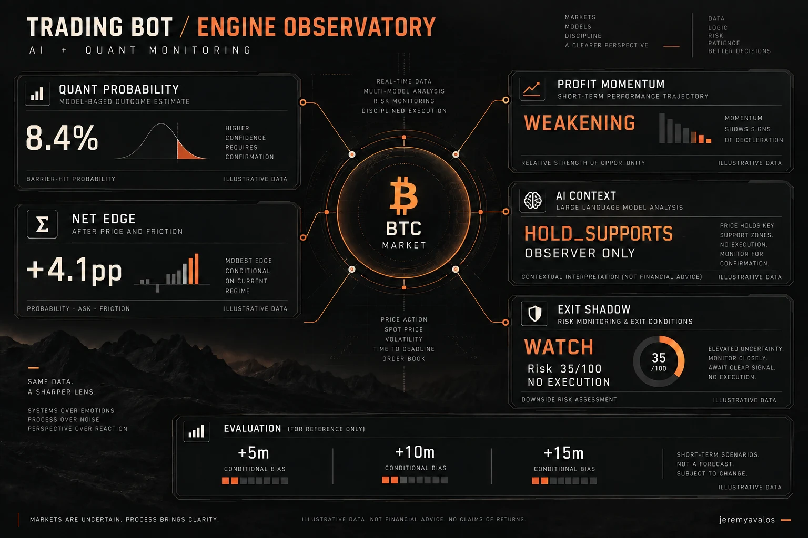

BUILD
- Mobile Apps
- Websites
- SaaS Platforms
JEREMY / DEV.01
Building digital products with presence.
Software Developer · Entrepreneur · Tech Specialist

03 / CHALLENGE
CHALLENGE / 03
This is a developer experiment — lightweight, minimal and polished. No accounts required. Create a challenge and I'll respond.
02 / CAPABILITIES
01 / WORK
PROJECT / 01
Local quantitative trading system combining real-time market data, probability models, AI-assisted context, execution controls and continuous strategy evaluation.
BACKEND · QUANT SYSTEMS · LOCAL AI

PROJECT / 02
A modular Binance Spot trading engine that turns multi-timeframe signals into controlled entries and adaptive exits, with local AI context and a journal of every decision.
BACKEND · EXECUTION SYSTEMS · LOCAL AI
PROJECT / 03
On-chain token intelligence for BNB Smart Chain: discover new PancakeSwap pools, screen contract and liquidity risks, and track what happens after each candidate is scored.
BLOCKCHAIN · SECURITY ANALYSIS · DATA PIPELINES
PROJECT / 04
Support resources designed to reduce friction for people navigating legal, psychological, and employment challenges.
CREATOR · PRODUCT DESIGN · DEVELOPMENT

PROJECT / 05
Luxury yacht reservation platform connecting a mobile-first customer experience with a real reservation backend.
FULL STACK DEVELOPMENT

PROJECT / 06
Discipline system designed to keep routines, accountability and personal growth consistent.
FOUNDER · DESIGNER · DEVELOPER

PROJECT / 07
Documentation-first service journey creating clarity around immigration support and next steps.
PRODUCT DESIGN · BUSINESS ANALYSIS
EXPERIMENTAL · LOCAL-FIRST · REAL-TIME
Built by Jeremy Avalos. A modular TypeScript / Node.js architecture that interprets prediction markets, tests executable opportunities and evaluates its own decisions. Experimental models and controls do not guarantee returns or prevent every loss.
01 / THE CHALLENGE
A promising market is only a candidate. Discovery, parsing, liquidity, probability and risk are independent checks before an order can proceed. The engineering challenge is turning noisy real-time inputs into traceable, constrained decisions.
02 / ARCHITECTURE
REST APIs connect Polymarket API / CLOB execution and Binance market data to modular analysis engines. Position monitoring feeds exit controls and durable evaluation datasets.

03 / MARKET INTELLIGENCE
Discovery ranks markets approximately every five minutes. A high score alone never authorizes a buy.
The BTC / ETH parser extracts asset, target, UP / DOWN direction, deadline, exact-day windows and date ranges. For example, “Will Bitcoin reach $86,000 September 14–20?” becomes a bounded barrier event. For exact-day markets, Binance one-minute candles can verify whether the barrier was already reached within that window.
The real order book provides best bid, best ask, spread, depth, tick size and minimum order size. Entries use executable prices.
04 / QUANT + NET EDGE
The quant engine estimates barrier-hit probability from spot price, target distance, time remaining, volatility, historical behavior and estimated drift.
Model probability − executable market price − estimated friction = net edge
The current experimental entry threshold is approximately +3 percentage points. A low price alone is insufficient.
HIGH SCORE + LIQUID MARKET + INSUFFICIENT PROBABILITY → SKIP
05 / AI INTEGRATION
Qwen runs locally through Ollama, using NVIDIA GPU / CUDA when available. It adds technical and market context for candidates and open positions: HOLD_SUPPORTS, WEAKENING, EXIT_RISK or UNKNOWN. It does not independently buy or sell.
A separate Profit Momentum engine combines 1m / 5m / 15m RSI, trend, relative volume, ATR and timeframe agreement into STRONG, STABLE, WEAKENING or REVERSING states, primarily for observation and calibration.
06 / RISK & EXECUTION
The liquidity gate blocks entries when absolute spread exceeds approximately 1.5 percentage points or relative spread exceeds 20% of ask, limiting exposure to immediately adverse marks in wide books.
Available account capital is synchronized before sizing. An approximately $5 position target adapts to capital: $25 → 20%, $50 → 10%, $100 → 5%, subject to a maximum risk percentage.
Stop loss, profit lock, hard and trailing take profit, and time-based profit extension manage positions. Pending BUY limits, consecutive-loss pauses and exchange-error pauses constrain execution. An executed stop loss puts that market on an approximately one-hour cooldown, persisted across restarts, while other markets remain eligible.

07 / CONTINUOUS CALIBRATION
Entry Calibration records bought and rejected candidates, then checks outcomes after 5, 10 and 15 minutes to study whether different net-edge ranges identify better opportunities.
Exit Engine v2 runs in shadow mode: hypothetical HOLD / WATCH / EXIT decisions never execute a sale. It examines momentum, drawdown from peak, one- and five-minute bid velocity, spread and current P&L. Later observations test whether an alternative exit would have protected capital or closed too early.
The bot evaluates what happened after its decisions, building evidence for calibration rather than assuming its rules are correct.
08 / LOCAL INFRASTRUCTURE
Linux / Kali and tmux keep Trading Engine, AI Evaluator, Entry Evaluator and Exit Shadow Evaluator running as independent processes. The CPU handles strategy, APIs and analysis; NVIDIA GPU inference supports local Qwen.
Local persistence and JSONL datasets retain decisions, cooldowns and evaluation outcomes. Storage is deployment-dependent, with PostgreSQL / local storage as applicable. AI context runs locally while market data and execution depend on exchange APIs.
Parameters shown are approximate experimental settings and may change. Illustrations communicate architecture, not investment performance.
An independent TypeScript / Node.js engine for Binance Spot, with separate market intelligence, strategy, risk, execution and local AI modules. Supports PAPER, TESTNET and LIVE modes.
01 / MARKET INTELLIGENCE
Combines 1m, 5m and 15m market regimes with RSI, momentum, relative volume, volatility and spread checks. The signal engine produces a score and explicit reasons that feed a separate entry decision.
02 / RISK & EXECUTION
Checks available balances, configured capital caps and Binance exchange filters before execution. Execution health gates new buys, and a failed exit blocks new entries. The system trades Spot without leverage, margin or futures.
03 / POSITION MANAGEMENT
Stop-loss rules and profit protection work alongside trailing retreat and trend context. Position monitoring evaluates both current return and retreat from peak, allowing exit decisions to respond as market conditions change.
04 / LOCAL AI & TRACEABILITY
Ollama provides structured assessments of trade setups and open positions. AI observes rather than placing orders or overriding risk rules. Dedicated signal, trade and AI journals retain the evidence behind decisions.
An asynchronous Python research pipeline that watches PancakeSwap V2/V3 pool creation on BNB Smart Chain and builds a persistent dataset of candidates, security checks, scores and observed outcomes. The current build performs observation only; it does not sign transactions or execute trades.
01 / DISCOVERY & ORCHESTRATION
Web3.py reads new pool events while asynchronous analysis follows each candidate. V2 reserve checks wait for on-chain liquidity; provider readiness checks retry while market and security data become available. Candidate states and provider timings are stored in SQLite.
02 / SECURITY PIPELINE
DexScreener supplies market and liquidity context, Honeypot checks buy/sell simulation and taxes, and GoPlus supplies contract risk flags. Missing required data leaves a candidate pending. Checks can reject honeypots, excessive taxes, low liquidity and dangerous owner capabilities.
03 / EXPLAINABLE SCORING
Security-cleared candidates receive a 0–100 research score based on liquidity, early activity, turnover, taxes, holder distribution and contract characteristics. Component scores and rug-risk snapshots preserve the reasoning; a score does not authorize a trade.
04 / OUTCOME EVALUATION
A concurrent tracker captures later price and liquidity snapshots over configured time horizons. It records elapsed time and delayed observations, and labels outcomes such as liquidity collapse, severe liquidity drops and price collapse to support future calibration.

04 / ABOUT
I’m currently studying Software Engineering while building digital products, mobile applications and web platforms.
05 / CONTACT
Freelance projects, product collaborations and technology opportunities.